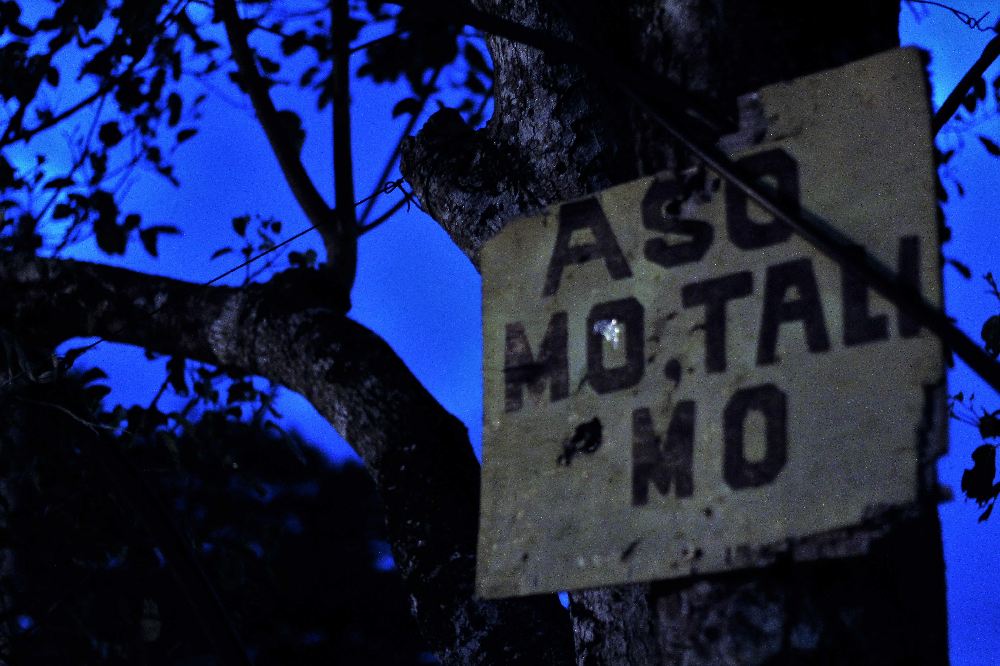

No Parking

Parking just about anywhere within the barangay is strictly prohibited. The Dagsian barangay doesn't want the road to be crowded and traffic that's why they emposed this law that states that "No Parking from 6PM to 6AM.
Dogs
Dagsian barangay has a rule Stating the quote "Aso mo, Tali mo" that if you own a dog, you should not let it wander around the barangay. Owning a dog is not prohibited but if you do own a dog, you should tie it up at your house or let it free but only within your house and not let it free within the barangay.
Spitting

The No Spitting rule is strictly prohibited in the Dagsian barangay. Why? it makes the residence & community uncomfortable. Especially when walking you would see phleghm or maybe "Momma". Not only those but also spitting food like bubblegums, candies for it is also considered littering.
Jeepney Line

Transportation in the Dagsian barangay is hard for public tranpsportation vehicles don't go there that much making jeepney's or taxi's hard to find. Although some jeepney's go there in a certain place where all jeepney's stay. The line for jeepney's is long for many people within the community uses this vehicle. That's why the barangay implemented that when taking these vehicles they should make a line so that it wouldn't be too crowded and unorganized. There is a checker who is maintaining and organizing these people in the line, this rule would also prevent other people from cutting in the line so that it wouldn't lead to chaos.
Curfew

Going home late is strictly prohibited in the Dagsian barangay, especially if you are 18years old & below. Why? because it's dangerous in the night time. Dagsian barangay emposed a rule that all 18years old & below should be at home before or by 9pm. Those who will not be complying with this rule, the barangay would call their parents/guardians and give them certain consequences. This rule is to prevent kidnapping or murder, and also just to protect the younger generations that live within the barangay.
Garbage
The Dagsian barangay is most strict with this rule. Which is the "No Dumping of Garbage here" Why? because it makes the barangay dirty and unpleasant to other people. Who would live in a barangay where it's dirty and smelly. Dumping of Garbage anywhere may affect the barangay's health and welfare. That's is why the barangay emposed this rule in-order to make the barangay clean and pleasant to live in.